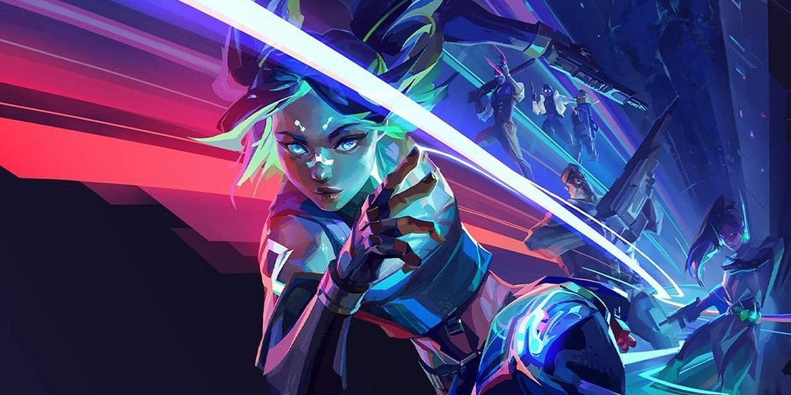

Setelah beberapa hari lalu disuguhkan dengan splash art dari Neon, Riot Games akhirnya merilis video trailer sinematik dari sang Agent baru tersebut. Dalam videonya memperlihatkan tampak akhir dari sang Agent serta cuplikan singkat dari kemampuan yang dimilikinya. Dari video berdurasi 2:45 menit yang berjudul ‘Spark - Neon Agent Trailer’ ini, Neon diperkenalkan sebagai Agent baru yang bergabung di Valorant. Di kisahnya Agent asal Filipina tersebut diundang ke markas Valorant oleh Sage. Selain latar belakang kisah, dalam video ini juga diperlihatkan tampak in-game Neon serta kemampuannya. Berikut adalah penjelasan kemampuan Agent Neon:
Neon memiliki kemampuan untuk melakukan sprint cepat dan kemampuan sliding ke suatu arah. Kemampuan ini akan membantu mobilitasnya dalam pertarungan. Setelah sprint dan slide, Neon bisa langsung mengeluarkan senjatanya untuk melumpuhkan lawan.
Neon juga memiliki kemampuan untuk menggegarkan lawan lewat serangan berupa benda seperti granat yang akan meledak ketika menyentuh tanah. Kemampuan ini hampir mirip dengan efek dari kemampuan Astra serta bentuk granat seperti kemampuan KAY/O.
Neon bisa mengaktifkan sebuah tembok api(mirip milik Phoenix) namun bedanya Neon bisa mengaktifkan di kedua sisi membuat semacam terowongan dari tembok api berwarna biru yang bisa dilewati oleh Neon dan rekan tim.
Ultimate milik Neon membuatnya bisa menembakkan sebuah aliran atau laser listrik yang keluar dari ujung jarinya. Neon juga bisa melakukan sprint dan slide ketika menggunakan ultimatenya. Dari tampak awal, ultimate ini sepertinya akan memberikan damage berkelanjutan ketika terkena pada lawan. Tadi adalah penjelasan dari kemampuan milik Agent terbaru Valorant asal Filipina, Neon. Untuk saat ini Riot masih belum memberikan informasi tentang nama dari setiap kemampuan Neon juga jadwal kapan Agent ini akan dirilis. Berdasarkan kemampuannya, Neon diprediksikan akan memiliki peran sebagai duelist.